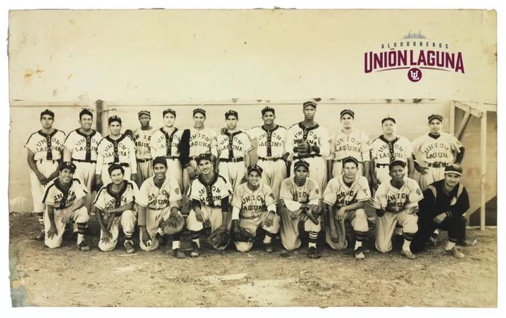

1942: el primer título
En ese tiempo no había playoffs: era campeón el primer lugar de la tabla. Unión Laguna terminó con 48 victorias y 40 derrotas, apenas un juego y medio arriba de Monterrey. Su mánager, el cubano Martín Dihigo, también era su mejor lanzador: ganó 22 juegos y fue el líder de la liga en efectividad (2.53) y en ponches (211).